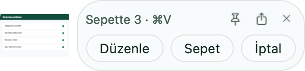

Çok çek. Bir kez yapıştır.
ShotBasket Mac’inin menü çubuğunda durur ve çektiğin her ekran görüntüsünü bir sepette tutar. Hazır olduğunda tek ⌘V hepsini mesajına ayrı dosyalar olarak, çektiğin sırayla bırakır.
Pano tek görüntü tutar.
Mesajın beş tane istiyor.
Her yeni ekran görüntüsü öncekinin yerine geçer. Çekersin, sohbete geçersin, yapıştırırsın, geri dönersin ve hepsini baştan yaparsın. ShotBasket’le önce hepsini çekersin, sonra bir kez yapıştırırsın.
19adım
Alışılmış yol
- Çek
- Geç
- Yapıştır
- Dön
- Çek
- Geç
- Yapıştır
- Dön
- Çek
- Geç
- Yapıştır
- Dön
- Çek
- Geç
- Yapıştır
- Dön
- Çek
- Geç
- Yapıştır
Bu adımların dokuzu sadece pencere değiştirmek.
7adım
ShotBasket ile
- Çek
- Çek
- Çek
- Çek
- Çek
- Geç
- ⌘V
Her görüntü ayrı bir dosya olarak gelir. Hiçbiri birleştirilmez, sen Gönder’e basana kadar hiçbir şey gitmez.
Maket değil, uygulamanın kendisi.

Hepsi sepette bekler.
Görüntüler sen yapıştırana kadar sırayla durur, Mac’i yeniden başlatsan bile. Birini düzenle, birini kaldır ya da hepsini AirDrop’la paylaş.

Göndermeden önce işaretle.
Ok, metin, şekil, numaralı adım, bulanıklaştırma ve kırpma. Düzenleme yeni bir PNG oluşturur, özgün görüntü olduğu gibi kalır.

Her çekimden sonra küçük bir kart.
Kaç görüntünün beklediğini gösterir. Küçük resmi istediğin uygulamaya sürükle ya da düzenleyiciyi oradan aç.
Araç kutusunun geri kalanı.
Hepsine aynı görünüm
Her görüntüye aynı arka plan ve çerçeve.
Kaydırmalı yakalama
Bütün sayfa tek uzun görüntü.
Ekran kaydı
Kaydet, kırp, böl, MP4 olarak sakla.
Metin ve QR kopyala
Görüntüdeki yazıyı Mac’inde oku.
Ekrana sabitle
Çalışırken görüntü üstte kalsın.
Renk seçici
Ekrandaki her noktanın HEX kodu.
Zamanlayıcı
Görüntüyü birkaç saniye sonra çek.
AirDrop ve Paylaş
Tek görüntüyü ya da bütün sepeti gönder.
İstediğin yere sürükle
Görüntüyü her uygulamaya ve tarayıcıya bırak.
20 saniyede gör.
Sesi aç. Kısa sürüyor.
ShotBasket internete çıkamaz.
Çıkmıyor değil, çıkamaz.
Mac App Store’daki her uygulama korumalı bir alanda çalışır ve internete ihtiyacı varsa bunu baştan bildirmek zorundadır. ShotBasket hiçbir şey bildirmez, bu yüzden macOS deneyebileceği her bağlantıyı engeller. Ekran görüntülerin Mac’inde, ShotBasket’in klasöründe kalır.
- Hesap yokAç ve çekmeye başla.
- Analitik yokReklam yok, telemetri yok, takip yok.
- Bulut yokHiçbir şey hiçbir yere yüklenmez.
macOS hangi izinleri soracak ve neden
- Ekran Kaydı
- Ekran görüntüsü ve ekran kaydı almak için. Yeni macOS sürümlerinde adı Ekran ve Sistem Sesi Kaydı.
- Erişilebilirlik
- Yakalama kısayolları ve sepeti ⌘V ile yapıştırmak için. macOS 27’de adı Aygıt Denetimi ve Veri Erişimi.
- Mikrofon (isteğe bağlı)
- Sadece ekran kaydına sesini eklemek istersen.
9,99 $
Bir kez öde. Senin olsun.
Abonelik yok, hesap yok, uygulama içi satın alma yok. ShotBasket’i bir kez alırsın, güncellemeleri Mac App Store’dan gelir.
- Sınırsız çekim, hepsi için tek ⌘V
- Ok, metin, bulanıklaştırma ve kırpmalı düzenleyici
- Kaydırmalı yakalama ve ekran kaydı
- Metin ve QR kopyalama, sabitleme, renk seçici
- macOS 13 ve sonrası, Apple silikon ve Intel
- Türkçe ve İngilizce
Fiyat ABD doları cinsinden. App Store sana kendi para biriminde gösterir.
Almadan önce
Hangi uygulamalara yapıştırabilirim?
Yapıştırınca dosya kabul eden her uygulamaya ve web sayfasına: e-posta, sohbet uygulamaları, notlar, iş takip araçları ve çoğu yükleme alanı. Dosyaları nasıl göstereceğine uygulama karar verir.
⌘V her yerde değişiyor mu?
Yalnızca sepette bekleyen görüntü varken. Sepet boşken ya da ShotBasket’i menü çubuğundan duraklattığında ⌘V, Mac’in normal yapıştırmasıdır.
Benim yerime mesaj gönderir mi?
Hayır. ShotBasket dosyaları tıkladığın alana yapıştırır. Return’e basmaz, hiçbir şey göndermez.
Ekran görüntülerim nerede tutuluyor?
Mac’inde ShotBasket’in kendi klasöründe. Sepetten çıkan görüntü seçtiğin süre sonunda silinir, bu süre en az on dakikadır. Kalıcı kopya için Ekran Görüntülerini Klasöre Kaydet’i aç.
Deneme sürümü var mı?
Mac App Store’da ücretli uygulamalar için deneme sürümü yok. ShotBasket sana uymazsa reportaproblem.apple.com adresinden Apple’dan iade isteyebilirsin.
iPhone ya da Windows sürümü var mı?
Hayır. ShotBasket Mac için yapıldı.